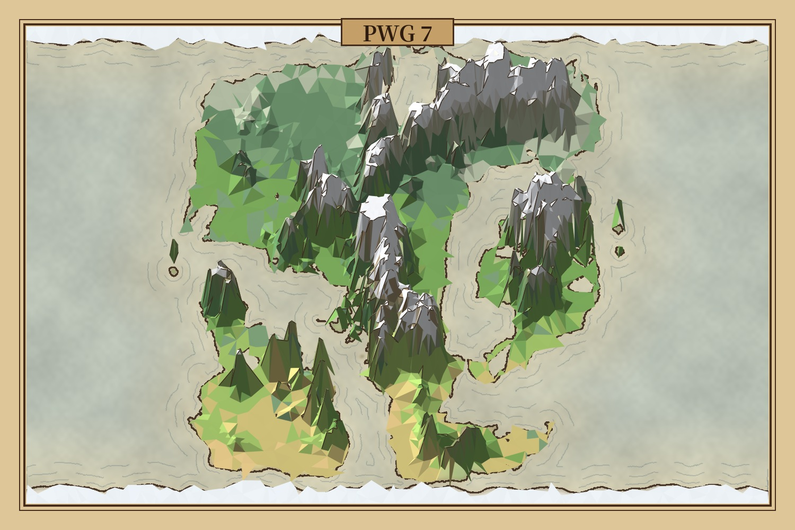
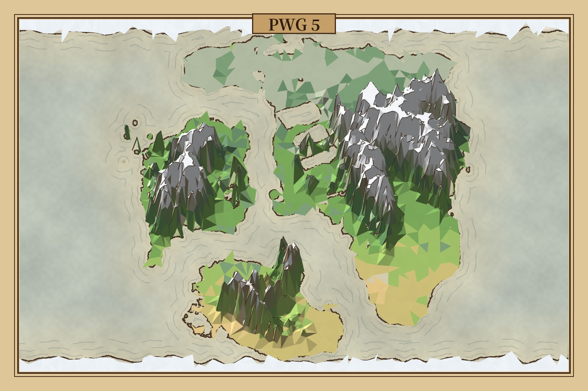
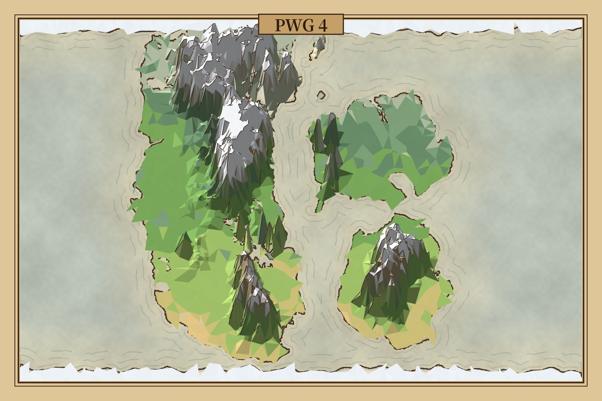
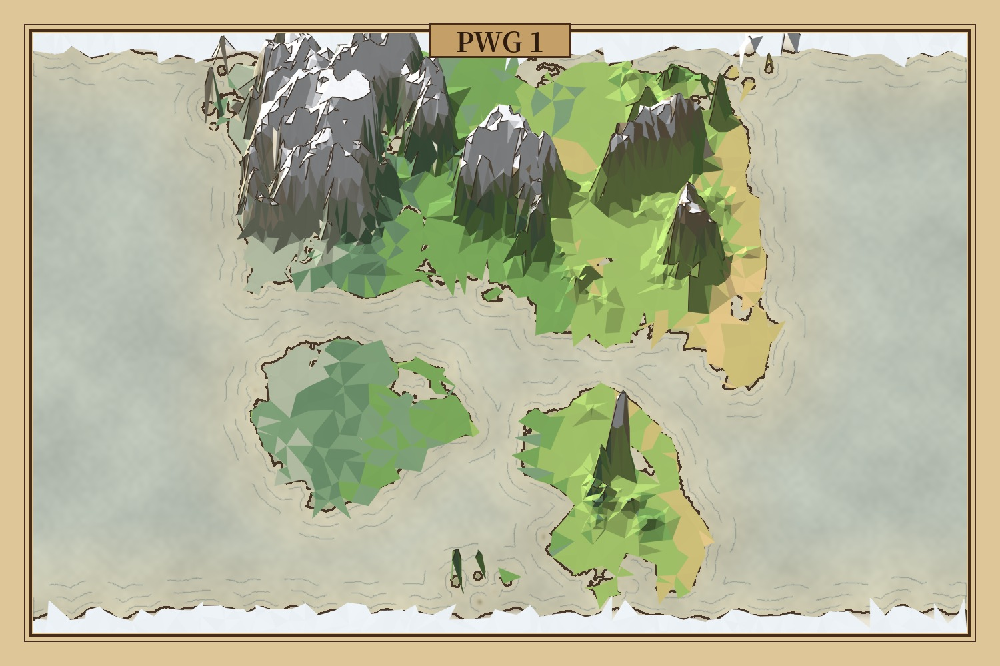

PWGの使い方(地殻=陸・向き・氷)で作った世界を、ローポリで描く(11-20)
概要: PWGの使い方(大陸の地殻の割合=陸と同じ、世界の向きを選ぶ、上下を白い氷にする)で作った5個を、これまでと同じローポリで描きました(世界ごとの調整なし)。左右の端は5個とも海(最大3.5%)で、端が絵として不自然に切れる問題は出ませんでした。一方、正方形の世界を中央に置くので、左右に海の余白が広く残ります。
seed7(そのまま。端は全辺が海)(陸 画像全体38%(氷を除く31%))

絵番号 E156
seed5(そのまま)(右の端の陸3.5%)

絵番号 E157
seed16(そのまま)(右の端の陸1%)
 絵番号 E158
絵番号 E158
seed4(そのまま。上端に陸があるが氷の帯で隠れる)(左右の端は海)

絵番号 E159
seed1(90度回した世界。元は右端に陸)(左右の端は海)

絵番号 E160
基準に合ったか(実測)
- 端は海: 5個とも左右の端の陸は3.5%以下。前回(mapstyle36)のPWGは端の陸が18〜28%で、直線で切れていた。
- 大陸は3つ: 設定は3つ。目では3〜4つの大陸に見える。
- 陸の割合: 世界の中では約5割だが、画像全体では氷を除いて約31%(正方形を中央に置くため、左右が海になる)。基準の4〜6割には画像全体では届かない。この点は未解決。
目で見た評価(各1枚)
- 山は尖って雪も付き、山らしい。山の多い世界でローポリが映える、という前回の結論と一致した。
- 低地はやはり大きな平らな面で単調。
- 上下の氷は、飾り枠に溶けて目立たない。氷を厚くするか形を作らないと、極地らしさは出ない。
- 左右の海の余白が広く、世界が中央に小さく見える。
- seed5の上の中央に、淡い四角い面が出た(低地か水の扱いの癖と見立てたが、原因は未確認)。
限界・未確認
- 5個とも各1枚・目視のみ。iPhoneでの見え方は未測定。
- 世界は、端が海の条件で選んだ(見た目では選んでいない)。
- 氷は全幅に平らな低い陸として置いただけで、形・高さは作っていない。
- 世界データはGoogleドライブに未保存(ハブにも置かない)。
次: 世界データをGoogleドライブに保存し、画像全体の陸の割合(左右の余白)の対策を決める。